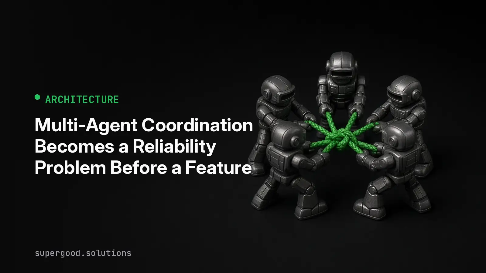

Multi-Agent Coordination Becomes a Reliability Problem Before a Feature
TL;DR: Multi-agent systems do not usually fail because one model was not smart enough. They fail because the team shipped a small distributed system without ownership, budgets, handoff rules, or a way to see when the agents start negotiating with each other instead of doing the work.
Key Insight
The contrarian move is to treat coordination as the product, not the glue.
Most enterprise agent plans still start with the appealing part: split the work across a planner, a researcher, a writer, a verifier, and maybe a tool agent. That can work. It can also create a new failure mode where every agent is locally reasonable and the system is globally stuck.
The problem is not only latency or token cost. It is operational ambiguity. One agent waits for a missing signal. Another retries a task that was already reassigned. Two agents produce conflicting answers and a third tries to reconcile them forever. Your uptime monitor stays green because nothing crashed. Your logs look busy because everyone is talking. The user just sees a spinner.
That is why multi-agent reliability needs its own checks:
- A task has exactly one owner at a time.
- Every handoff has a deadline and an allowed next state.
- Agents can reject work, but they cannot silently defer it.
- Shared memory changes are versioned and attributed.
- Loops have a budget measured in steps, time, and tokens.
This is less glamorous than adding another specialist agent. It is also the difference between a demo and a system a support team can reason about on Monday morning.
Why Teams Miss This
Teams borrow the wrong mental model. They think, "We are adding more workers." In production, they are adding more networked services with fuzzy inputs, shared tools, partial memory, and probabilistic behavior.
Single-agent pilots hide this. If one agent gets confused, the failure is usually visible: bad answer, tool error, timeout. Multi-agent failures are stranger. The agents can keep producing plausible intermediate work while the whole workflow is making no progress.
Splunk calls this a coordination tax, and its 2026 guidance is blunt: circular debates, role drift, duplicate work, and stalled workflows come from system design choices, not just model limits. The recommended fixes sound like distributed systems engineering: deterministic task allocation, time and token circuit breakers, structured logs, graph views of execution, and workflow checkpoints.
The Hugging Face Slipstream post makes a related point from the communication side. If agents spend a large share of their budget talking about routing, status, and task assignment, coordination becomes an economic and reliability concern. The post argues for compact, human-readable message protocols and shared concept dictionaries so agent communication is easier to audit.
The common mistake is assuming observability means "log every prompt and response." That is necessary, but it is not enough. A transcript tells you what agents said. A coordination trace tells you whether the system had a valid path to completion.
How to Actually Do It
Start with a small state machine, not another agent.
For each workflow, define the states an item can occupy: queued, claimed, working, blocked, reviewing, done, failed. Then define which actor can move it from one state to another. If an agent cannot explain the next state transition in a structured event, it should not be allowed to continue.
Here is a simple event shape that catches many failures before they become expensive:
{
"workflow_id": "invoice-review-2026-10-10-0182",
"task_id": "extract-vendor-terms",
"agent": "contract-reader",
"from_state": "working",
"to_state": "reviewing",
"owner": "contract-reader",
"next_owner": "policy-verifier",
"attempt": 2,
"step_budget_remaining": 5,
"token_budget_remaining": 12000,
"deadline": "2026-10-10T19:42:00-07:00",
"evidence": [
"source_doc:msa_042.pdf#page=7",
"field:payment_terms"
],
"reason": "extracted candidate terms and needs policy check"
}Once events look like this, basic rules become enforceable:
- Reject a transition if
next_owneris missing. - Page or fail fast if a task sits in
blockedpast its deadline. - Stop the workflow if two agents try to claim the same task.
- Require a verifier before a customer-visible action.
- Stop retries when
step_budget_remainingreaches zero.
Then add three dashboards that match how incidents actually happen.
First, show workflow progress by state, not just API latency. A pileup in reviewing tells you the verifier is the bottleneck. A pileup in blocked tells you the agents are waiting on missing data or unclear authority.
Second, show agent-to-agent edges. If the same two agents pass a task back and forth three times, that is a loop even if every individual response looks valid.
Third, show budget burn by workflow outcome. A failed workflow that used 4,000 tokens is annoying. A failed workflow that used 400,000 tokens is a product and cost incident.
For enterprise teams, this has an immediate payoff. A procurement agent can draft vendor comparisons. A policy agent can check terms. A finance agent can flag budget impact. But the orchestrator should own the workflow contract. The agents can reason inside their lanes. They should not invent the traffic rules while driving.
What We've Learned
Do not scale a multi-agent system by adding agents first. Scale it by making coordination boring.
This week, pick one agent workflow and run a coordination review:
- List every handoff.
- Name the owner at each step.
- Add a time, token, and retry budget.
- Define the valid next states.
- Log each transition as a structured event.
- Create one alert for a loop or expired handoff.
The best agent systems will still use capable models. They will still benefit from specialist roles. The winning teams will be the ones that make agent teamwork inspectable, bounded, and dull enough to operate.
Sources
- Hugging Face community article on agent communication overhead: Slipstream: Solving the Coordination Crisis in Multi-Agent AI Systems
- Splunk guidance on multi-agent coordination failures and circuit breakers: Multi-Agent Coordination: 10 Strategies to Prevent System Failures
- Augment Code guide summarizing multi-agent failure categories and coordination fixes: Multi-Agent AI Systems: Why They Fail and How to Fix Coordination Issues
- MAST failure taxonomy paper referenced by multiple production guides: Why Do Multi-Agent LLM Systems Fail?
Have a specific workflow in mind?
Bring it to a Quick Scan — a live working session where we'll tell you honestly whether it should be an agent, a workflow, or left alone, before you spend a dollar building it. You get 3 prioritized recommendations on the call, a one-page summary after, and the $1,000 credited toward a build if you sign within 14 days.
Get new posts + practical agent-ops notes
One email when something new goes up. No nurture sequence, no spam — unsubscribe whenever you want.